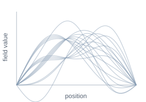
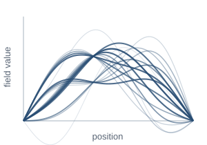
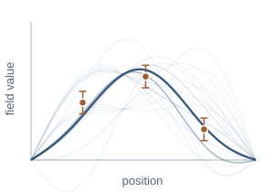
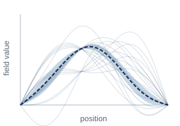
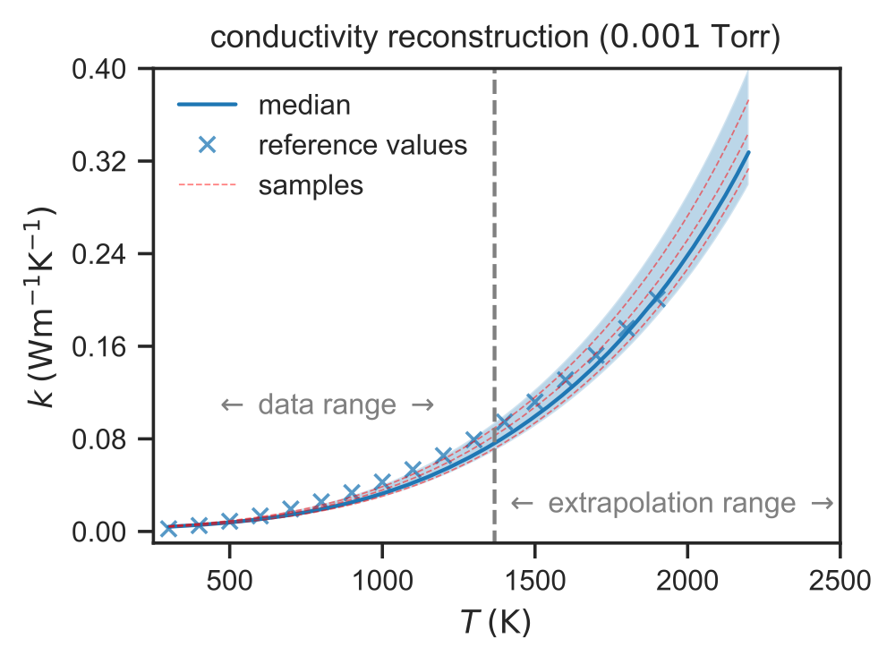

Research
Learning from physics and data.
How can we reconstruct a system from partial observations in physically meaningful ways?
A probability distribution over possibilities
An inverse problem begins with observations and asks what is the underlying state that could have produced them. For example, temperature measurements may tell us about the unknown thermal conductivity of a material. Limited or noisy data often admit several explanations, which leads to an ill-posed problem. In this setting, the Bayesian approach is a natural fit as it enables uncertainty quantification over the possible explanations. This approach describes these possibilities through a probability distribution, combining prior knowledge from the physics with a model of the observations.
Much of my work uses information field theory, which poses Bayesian inference as a physical field theory taking inspiration from Feynman’s path integral formulation of quantum physics. This method provides a way to carry out Bayesian inference when the unknown is an entire function or field. Rather than reasoning only about a single fitted function, we work with weighted collections of possible functions.
In my physics-informed formulation, physical laws help define the prior - our beliefs before conditioning on data. A separate observation model describes how measurements relate to the unknown field, and combining these gives a posterior that represents our updated beliefs after observing the data.
01
Many possible functions

A field may be consistent with many explanations before measurements are available.
02
Physics shapes a prior

Physical information gives some functions greater probability, without requiring exact agreement.
03
Observations update belief

A model of measurement noise changes the relative plausibility of these functions.
04
Prediction with uncertainty

The updated ensemble describes a prediction and the uncertainty that remains.
Bayesian inverse problems · Information field theory
Physical knowledge,
with room for model error.
Physical models provide structure when observations are scarce. Yet their equations often contain approximations, unresolved effects, or unknown parameters. Treating an approximate model as exact can lead to confident but misleading conclusions.
I encode physical knowledge through priors that favor functions with lower physical energy or smaller equation residuals. A model-trust parameter controls how strongly that information constrains the field. Learning this parameter alongside other unknowns can help identify disagreement between the physics and the data.
I also study the mathematical foundations of these constructions: how probability measures on functions are defined, how finite approximations converge, and when a maximum a posteriori estimate is unique.
Scientific machine learning · Functional priors
What should a neural
network believe?
A Bayesian neural network places a distribution over its weights. The difficulty is understanding what that distribution implies for the functions the network produces. Even a simple weight prior may encode behavior that is hard to interpret.
I study priors defined through desired behavior in function space. The aim is to bring interpretable functional structure into Bayesian neural networks using connections to Gaussian processes.


Uncertainty quantification · Engineering applications
Working with experimental uncertainty.
Thermal protection materials
Laboratory measurements may cover only part of the temperature range experienced by a spacecraft’s insulation. I work on inferring thermal conductivity from temperature measurements using the heat equation and a probabilistic model of the unknown property.
This lets us examine how uncertainty grows beyond the measured regime and how different plausible conductivities affect thermal-protection predictions. The application also shows why the prior and the assumptions in the heat-transfer model matter.


Engine states and parameter calibration
In intake manifold modeling, I use IFT to reconstruct temperature and pressure while estimating physical parameters from noisy sensor data. Testing across engine cycles reveals where the model transfers well and where effects such as exhaust gas recirculation require a better physical description.
Intake manifold dynamicsStochastic emissions
I have also contributed to modeling diesel particulate matter with a mean-reverting stochastic process. Engine variables determine its changing mean and volatility.
Particulate-matter modeling